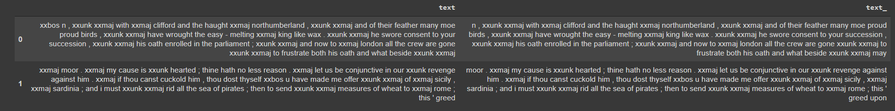
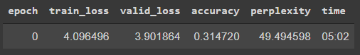
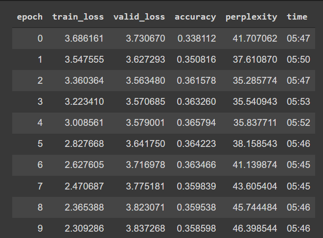

# Some imports
!pip install -Uqq fastbook
import fastbook
fastbook.setup_book()
from fastbook import *
from IPython.display import display,HTML
from fastai.text.all import *
Using NLP for text generation
Using FastAI to build a NLP text generator
- toc: true
- badges: true
- comments: true
- categories: [NLP, Neural networks,FastAI, Python]

Introduction
NLP
NLP, or natural language processing, is a machine learning priocess used on language data. Some applications include:
- search, ranking
- spam detection
- ads recommendation
- email categorization
- machine translation
- speech recognition
- Sentiment analysis
From FastAI FastBooks:
What we call a language model is a model that has been trained to guess what the next word in a text is (having read the ones before). This kind of task is called self-supervised learning: we do not need to give labels to our model, just feed it lots and lots of texts. It has a process to automatically get labels from the data, and this task isn't trivial: to properly guess the next word in a sentence, the model will have to develop an understanding of the English (or other) language
Even if our language model knows the basics of the language we are using in the task (e.g., our pretrained model is in English), it helps to get used to the style of the corpus we are targeting. It may be more informal language, or more technical, with new words to learn or different ways of composing sentences. In the case of the IMDb dataset, there will be lots of names of movie directors and actors, and often a less formal style of language than that seen in Wikipedia.
We already saw that with fastai, we can download a pretrained English language model and use it to get state-of-the-art results for NLP classification. What is below
Here I’ll use the IMDB dataset and train it on the works of Shakespeare to generate text in the style of his work given a starting few words.
Uses fastAI, modified from “10_nlp.ipynb” in fastAI/fastbook
https://colab.research.google.com/drive/11JRjYu7XsmSzo3IT8oH2KNf-e-v6W5tf?usp=sharing
Code
Get some text to act as a style
# A URL containing the works of Shakespeare
url='https://ocw.mit.edu/ans7870/6/6.006/s08/lecturenotes/files/t8.shakespeare.txt'
# Going to put in a folder called BARD which we create
dest='BARD'
import os
os.mkdir(dest)
# get the text from the url and put as data
import requests
response = requests.get(url)
data = response.text
# reduce data to miss start and end guff
xstart=10450
xend=580
data = data[xstart:-xend]
# create a text file every 1000
# use format number_0.txt seems to work best for DataBlock
rr=int(len(data)/1000)
for i in range(rr):
with open(dest + '/{}_0.txt'.format(str(i)),'w') as f:
f.writelines(data[ (i-1)*1000:i*1000 ])Language model using DataBlock
# create path
path=Path()
# get's the text parts- will just come from folder dest
# where the text files are saved
get_shak = partial(get_text_files,folders=dest)
# Craete a dataBlock- using the Class of TextBlock and the classes
# in-built function from folder
dbb = DataBlock(
blocks=TextBlock.from_folder(path, is_lm=True),
get_items=get_shak, splitter=RandomSplitter(0.1)
)
# Now create the dataLoaders
dls =dbb.dataloaders(path, path=path, bs=128, seq_len=80)
# Have a look at the batches
dls.show_batch(max_n=2)
Create model and Run
learn = language_model_learner(
dls, AWD_LSTM, drop_mult=0.3,
metrics=[accuracy, Perplexity()]).to_fp16()learn.fit_one_cycle(1, 2e-2)
learn.unfreeze()
learn.fit_one_cycle(10, 2e-3)
Model Text Generation
TEXT = "Hi Romeo how are you?"
N_WORDS = 40
N_SENTENCES = 4
preds = [learn.predict(TEXT, N_WORDS, temperature=0.75)
for _ in range(N_SENTENCES)]print("\n".join(preds))“Cannot get rid of this spot” 30 words, 2 sentences
Can not get rid of this spot ? No ; I 'll set a foot to Caesar . If i can tell you , Triumvirate , that know the heads of
Can not get rid of this spot ? When one sees England here , he next is sure to be sent for . If i be not , my King , you must“Hi Romeo how are you?” 60words 2sent. 0.75temp.
Hi Romeo how are you ? What 's your will ? My heart is split . What , my soul ! My body 's as cold as wax ; my heart is now as a nail in my heart ; thou shalt see Romeo set a crown on't ! Come , and that ring i gave him , the ring“Where shall i go for my holiday?”
Where shall i go for my holiday ? Am i to France ? Are you English ? Are you a Spanish man ? [ aside ] i know not what ; nor no other man but this . [ they speak ] If i speak , i am going .“Poor me , poor me , poor me another drink”
Poor me , poor me , poor me another drink , I 'll burn out King Lear 's grave . Thou art too dear to me ; i am perfect i am least of all . I 'll go live i ' th ' middle , and there will i not live in this .